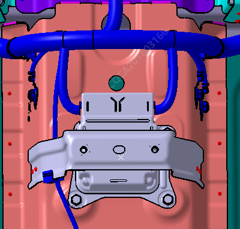
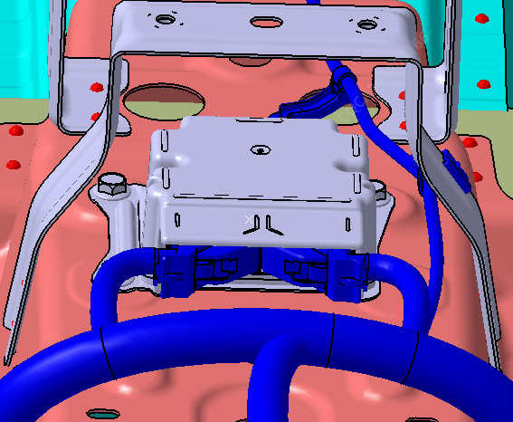

Снятие
Выполнить общий демонтаж центральной консоли. См. Снятие и установка центральной консоли
Выкрутить крепежные болты контроллера подушек безопасности.
Момент затяжки: 9 ± 1.5 N.m

Отсоединить электрический разъем контроллера подушек безопасности.

Установка
Установка выполняется в порядке, обратном снятию.
Контроллер подушек безопасности необходимо брать с осторожностью, при сборке избегать ударов, стуков и падений. Запрещается самостоятельно вскрывать корпус контроллера. После затяжки контроллера необходимо убедиться, что момент затяжки крепежных болтов составляет не менее 9 N•m.
Штрихкод изделия на всех деталях системы подушек безопасности является уникальным постоянным идентификатором этой детали; запрещается срывать или загрязнять его в процессе демонтажа, чтобы производитель мог выполнять прослеживаемость качества и проверку характеристик детали.
Перед демонтажем центральной консоли выключить питание автомобиля, питание должно находиться в положении OFF.